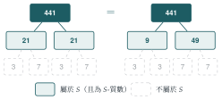

STEP I 2016，第 7 題
繼續之前，請先閱讀題目（原題為英文）。題目載於 STEP Support Programme 的題目資料庫： step.maths.org/questions/16-s1-q7
引子
每個大於 \(1\) 的整數都可以寫成質數（prime）的乘積，而且寫法只有一種：\(60 = 2 \times 2 \times 3 \times 5\)，再沒有別的寫法。這個事實你大概已經用過無數次，熟悉得讓人覺得顯然成立，根本不用證明。
這道題構造了一個小小的數字世界，看上去完全合情合理，但在這個世界裏，那個「顯然」的事實卻是錯的。這是一道 STEP I 的題目，所用的數學並不艱深，但當中的教訓卻十分深刻。1847 年，一個著名的費馬最後定理（Fermat’s Last Theorem）證明嘗試，正是敗在這個教訓之上，而代數學的一個全新分支亦因此誕生。
動筆之前
列出 \(S\) 和 \(T\) 的首幾個元素。按照第 (iv) 部分的定義，\(S\) 的哪些元素是\(S\)-質數？
\(S = \{1, 5, 9, 13, 17, 21, 25, 29, 33, \ldots\}\)，而 \(T = \{3, 7, 11, 15, 19, 23, \ldots\}\)。\(S\) 中的一個數如果不能寫成 \(S\) 中較小元素（\(1\) 除外）的乘積，它就是 \(S\)-質數。留意 \(9\) 是 \(S\)-質數，儘管在普通整數中 \(9 = 3 \times 3\)，因為 \(3\) 並不在 \(S\) 之中。一個數是否「質數」，取決於你獲准使用哪些數。
逐步解題
階段 1 併集、交集與乘積
\(S \cup T\) 是所有正奇數組成的集合，即兩者的併集（union），因為每個奇數除以 \(4\) 的餘數不是 \(1\) 就是 \(3\)。\(S \cap T\) 是空集，即兩者的交集（intersection）沒有任何元素，因為沒有一個數會有兩個不同的餘數。
\(S\) 的一般元素應該怎樣寫？兩個這樣的元素相乘，乘積是甚麼？
\(S\) 的元素是 \(4a + 1\)，其中 \(a \geq 0\)，而 \[(4a+1)(4b+1) = 16ab + 4a + 4b + 1 = 4(4ab + a + b) + 1 \in S.\] 所以 \(S\) 在乘法下封閉（closed）。至於 \(T\)： \[(4a+3)(4b+3) = 16ab + 12a + 12b + 9 = 4(4ab + 3a + 3b + 2) + 1,\] 這個數屬於 \(S\)，而不屬於 \(T\)。例如 \(3 \times 7 = 21 \in S\)。所以 \(T\) 在乘法下並不封閉。
階段 2 屬於 \(T\) 的質因數
在 \(T\) 中取一個不是質數的數。它的質因數（prime factor）全是奇數。假如這些質因數全都屬於 \(S\)，會有甚麼後果？
這個數是奇數，所以它的質因數全是奇數，各自屬於 \(S\) 或 \(T\)。假如它們全部屬於 \(S\)，那麼由於 \(S\) 在乘法下封閉，它們的乘積也會屬於 \(S\)。但這個乘積就是我們原來的數，而它屬於 \(T\)。所以至少有一個質因數屬於 \(T\)。■
階段 3 奇數個因數
把偶數個 \(T\) 的元素乘起來，乘積會落在哪裏？奇數個又如何？
每一對 \(T\)-數相乘都得到一個 \(S\)-數，而 \(S\)-數相乘仍然是 \(S\)-數，所以偶數個 \(T\)-因數的乘積屬於 \(S\)。奇數個的話，乘積就是（\(S\) 中的某個數）\(\times\)（\(T\) 的一個元素），用同類的計算可知它屬於 \(T\)。
現在取 \(t \in T\)。如果 \(t\) 是 \(T\)-質數，那就完成了。否則，把 \(t\) 寫成 \(T\) 的元素的乘積，其中每個元素都大於 \(1\)，因而小於 \(t\)。當中任何不是 \(T\)-質數的因數都可以再分解下去，如此類推。因數每次都變小，所以這個過程必會停止（這裏再次用到良序性質（well-ordering）），最後 \(t\) 就寫成了 \(T\)-質數的乘積。由於乘積屬於 \(T\)，因數的個數必定是奇數。■
階段 4 兩種分解
在 \(S\) 中找一個數，它有兩種真正不同的 \(S\)-質數分解。提示：利用像 \(9\) 這樣的數，它們之所以是 \(S\)-質數，只因為它們在普通整數中的質因數並不在 \(S\) 之中。
\(S\)-質數依次為 \(5, 9, 13, 17, 21, 29, 33, 37, 41, 49, \ldots\)。\(21 = 3 \times 7\)、\(9 = 3 \times 3\) 和 \(49 = 7 \times 7\) 全都是 \(S\)-質數，因為 \(3\) 和 \(7\) 都不在 \(S\) 之中。而且 \[441 = 21 \times 21 = 9 \times 49.\] 這就是 \(441\) 的兩種不同的 \(S\)-質數分解（圖 1.7.1）。唯一分解（unique factorisation）在 \(S\) 中並不成立。■

回顧
是否「質數」取決於所在的系統。\(9\) 和 \(21\) 在整數中是合數（composite），在 \(S\) 中卻是質數，因為分解它們所需的數並不存在。
封閉性很重要。\(S\) 在乘法下封閉；\(T\) 則不然。第 (iii) 和第 (iv) 部分的論證，全靠這一點分別。
顯然的事實也可以是一條定理。整數的唯一分解是需要證明的。這道題說明了原因：在一個看上去非常相似的系統中，它並不成立。
背後的數學
整數有何特別之處
為甚麼分解在普通整數中確實行得通？關鍵在於歐幾里得引理（Euclid’s lemma）：如果質數 \(p\) 整除乘積 \(ab\)，那麼 \(p\) 整除 \(a\) 或 \(p\) 整除 \(b\)。這條引理是用輾轉相除法（Euclidean algorithm）證明的，而它正正是在 \(S\) 中失效的地方。在那裏，\(S\)-質數 \(9\) 整除 \(21 \times 21 = 441\)（因為 \(441 = 9 \times 49\)），但 \(9\) 在 \(S\) 中並不整除 \(21\)。到了大學一年級，你會嚴謹地證明歐幾里得引理，並看到唯一分解如何由它推導出來。
1847 年 3 月 1 日，拉梅（Gabriel Lamé）向巴黎科學院宣布，他已證明了費馬最後定理。他的想法是利用複數單位根（roots of unity）把 \(x^n + y^n\) 分解， \[x^n + y^n = (x + y)(x + \zeta y)(x + \zeta^2 y) \cdots (x + \zeta^{n-1} y), \qquad \zeta = e^{2\pi \mathrm{i}/n}\] （其中 \(n\) 為奇數），然後就每個括號的質因數進行論證。劉維爾（Joseph Liouville）隨即提出質疑：由 \(\zeta\) 構成的數，憑甚麼一定有唯一分解？數星期後，人們才知道庫默爾（Ernst Kummer）早已證明這類數往往沒有唯一分解。最先失效的情況是 \(n = 23\)。
庫默爾盡力補救，發明了「理想數」（ideal numbers），這些額外的對象能夠恢復唯一分解，他並藉此對一大類指數證明了費馬最後定理。戴德金（Richard Dedekind）把庫默爾的理想數發展成理想（ideal），成為近世代數的核心概念之一。
一個值得記住的較小例子
在數系 \(\mathbb{Z}[\sqrt{-5}] = \{a + b\sqrt{-5} : a, b \in \mathbb{Z}\}\) 中， \[6 = 2 \times 3 = (1 + \sqrt{-5})(1 - \sqrt{-5}),\] 而這四個因數在該數系中全都是「質數」（練習 3）。試把這個例子與 第 1.6 節 的高斯整數（Gaussian integers）比較，後者的分解確實是唯一的。這類數系之中哪些具有唯一分解，是一個很深刻的問題。高斯（Gauss）猜想，在形如 \(\mathbb{Z}[\sqrt{-d}]\) 的數系及與其相近的數系之中，只有九個具有唯一分解。這個猜想最終由黑格納（Heegner）、貝克（Baker）和斯塔克（Stark）在 1952 年至 1967 年間證明。
思維技巧
當一個事實看來顯然得不用證明時，問問它依賴甚麼，並找出一個令它失效的情境。
構造反例（counterexample），也就是構造一個令「顯然」的事實不成立的世界，是弄清一個證明真正需要甚麼的最佳方法之一。大學本科代數有很大部分，就是在探問整數那些熟悉的性質，有哪些能在更一般的系統中保留下來。
延伸練習
另一個例子。證明 \(693\) 有兩種不同的 \(S\)-質數分解。你能找出一個製造這類例子的通用方法嗎？
偶數。設 \(E = \{2, 4, 6, 8, \ldots\}\)。哪些數是 \(E\)-質數？證明 \(60\) 有多於一種 \(E\)-質數分解。
\(\mathbb{Z}[\sqrt{-5}]\)。定義範數（norm）\(N(a + b\sqrt{-5}) = a^2 + 5b^2\)。證明 \(N(zw) = N(z)N(w)\)。先證明沒有任何元素的範數是 \(2\) 或 \(3\)，由此推導出 \(2\)、\(3\) 和 \(1 \pm \sqrt{-5}\) 在 \(\mathbb{Z}[\sqrt{-5}]\) 中不能再分解。
歐幾里得引理的應用。 較難 假設歐幾里得引理成立（如果一個質數整除 \(ab\)，它就整除 \(a\) 或 \(b\)），證明每個大於 \(1\) 的整數都只有一種質數分解，因數的次序不計。
延伸閱讀
Ian Stewart & David Tall, Algebraic Number Theory and Fermat’s Last Theorem（CRC Press）。開首幾章講述拉梅、庫默爾與理想的故事，程度適合好學的大學一年級學生。
John Stillwell, Elements of Number Theory。把整數的唯一分解與高斯整數的唯一分解並列比較。
Harold Edwards, Fermat’s Last Theorem: A Genetic Introduction（Springer）。適合有志挑戰的讀者：循歷史發展解說庫默爾的工作。